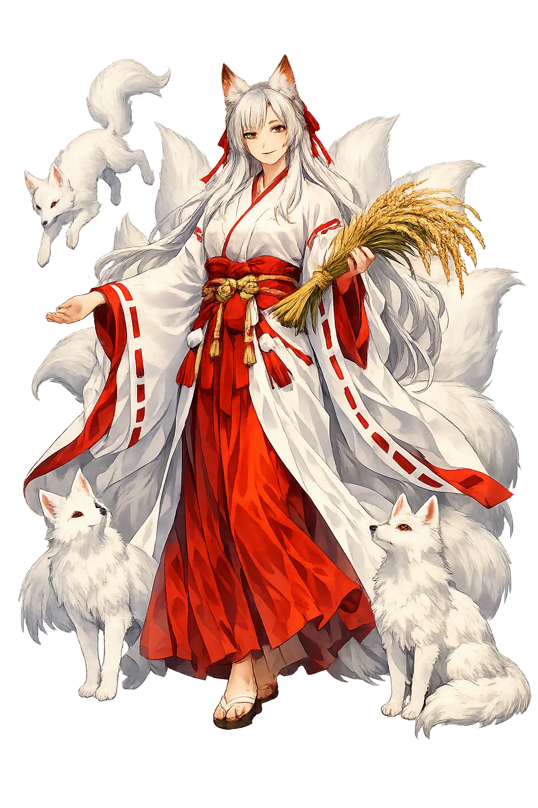
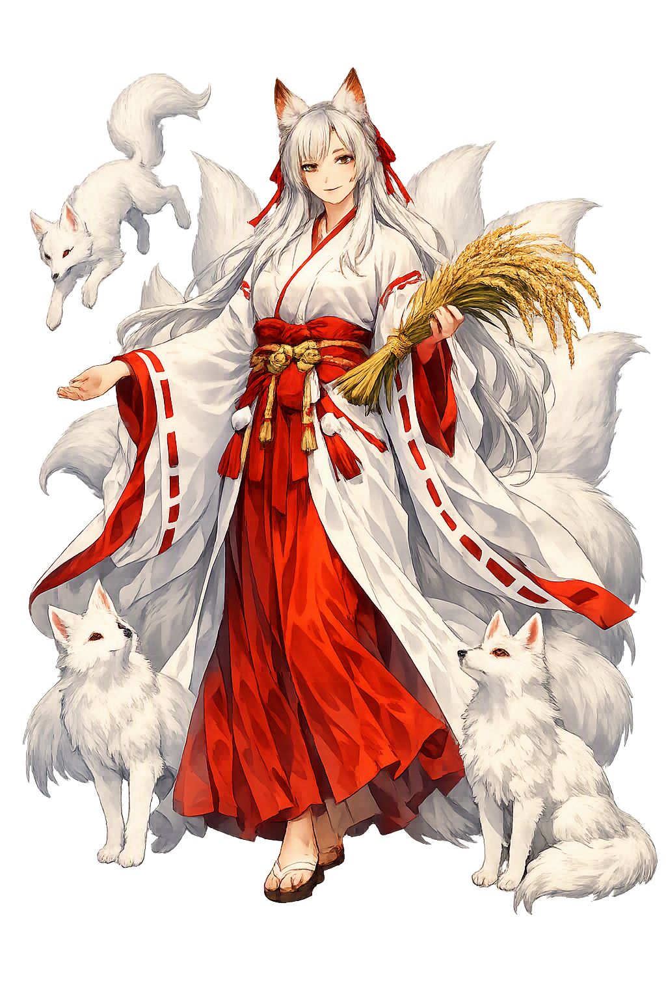

The Living Myth
Rice, Fertility, Foxes · Deity of rice, sake, and fox messengers

Stories of Inari
Inari has no single canonical myth cycle in the Kojiki manner. The kami's identity is distributed across a charter legend, a shifting triad of enshrined gods, the fox lore of the medieval period, and the craft legends of the cities — a biography written by worshippers rather than scribes.
The Nihon Shoki (Wadō 4, 711 CE) tells how Hata no Irogu, a leader of the immigrant Hata clan, practiced archery on a mountain by setting up a rice-cake as a target. When his arrow struck it, the cake rose into the air as a white bird and flew to the summit, where a radiance appeared. Taking this as a divine sign, Irogu founded a shrine on the spot. Rice-cake, white bird, mountain light: the kami announced itself through its own substance. The Hata were continental immigrants — weavers, engineers, and shrine-builders — and their mountain cult folded the new rice technology into the older kami world. The date makes Inari's shrine among the oldest documented in Japan, and the legend is the charter of what became Fushimi Inari Taisha. It is already the whole theology of Inari — a deity who arrives riding the rice itself.
At its head shrine, Inari is not one deity but three: Uka-no-mitama, the spirit of the rice plant; Satahiko; and Ōmiyanome, the ancestral weaver and food-goddess. Other Inari shrines substitute Toyouke, the goddess of the Ise Grand Shrine's outer precinct, who prepares the food of the gods. Medieval oracles ratified the triad, and the three remain enshrined today. Even the kami's gender never settled: Inari appears as an aged man, a radiant woman, or a fox-mounted deva, depending on the shrine and the century. Scholars read the fluidity as the mark of a genuinely popular cult, indifferent to the tidy genealogies of the court chronicles: Inari names less a person than an office, the power that fills the granary. The many-faced kami mirrors the many fates of rice — seedling, grain, sake, wealth — each a different disguise of one sustenance.
By the medieval period the kitsune — the fox — had become Inari's recognized messenger, and by the Edo period Inari cult and fox cult were so entangled that temple regulations had to forbid offerings of fried tofu at certain times. Foxes carried the kami's messages, guarded the granary keys held in their statues' mouths, and appeared in dreams and possession cults. The thousands of vermillion torii at Fushimi Inari, each donated by a shop or a family, map the commercial empire of a deity whose messenger moves, like trade itself, silently at the margins of the night. In the fox, Inari acquired what few agricultural gods possess: a double, clever and dangerous, who could walk into the human world and speak with a human voice. Tales multiplied of fox-weddings glimpsed in the rain, of possessed mediums channeling the kami, and of the nine-tailed fox whose tails count its centuries.
A tenth-century legend tells of Munechika, the Kyōto swordsmith ordered to forge a blade for the emperor with no partner to work the bellows. In a dream Inari promised help; a mysterious youth appeared, and before dawn two swords stood completed — one for the court, one kept by the smith. The tale, dramatized in the Nō play Kokaji, rests on the smith's dedication of his forge to Inari. The kami of the grain was equally the kami of the craft: rice becomes sake, and iron becomes a sword, by the same alchemy of transformation. The blades of the legend remain treasured names, and Munechika's Sanjō school of smiths flourished for generations at the capital. Inari's patronage of smiths, brewers, and merchants is the medieval extension of the oldest fact about the deity — that the stored harvest is capital, and capital wants a god.
Guardian of the Harvest and Merchant Prosperity
Inari is one of the most widely worshipped kami in Japan: a deity of rice who became, over a thousand years, the patron of fertility, sake, smiths, merchants, and worldly success. The vermillion torii gates and fox statues of Fushimi Inari Taisha in Kyōto are among the most iconic images of Japanese religion.
Inari governs the rice plant — enshrined as Uka-no-mitama, the spirit of the grain itself.
Kitsune carry the kami's messages and hold the granary key in their statues' mouths.
From the medieval period, traders, brewers, and smiths prayed to Inari for prosperity.
The head shrine in Kyōto, founded in 711 CE, is ringed by mountains of donated torii.
From the original script to the living URL
稲荷
The name in its original Japanese form. Inari (稲荷) is attested in the source tradition — “Rice load”. Its original diacritics and script distinctions carry the full phonetic and orthographic weight of the source tradition.
inari
The plain inari form is identical to the Unicode restoration. Because this name is already written in Latin letters, no diacritics, stress, or script information were lost — only capitalization differs.
Inari
The Unicode restoration does not need to recover lost marks for Inari. Its value is canonical spelling and consistent cataloguing, not the reconstruction of erased orthography. The domain is readable as-is to both DNS and humanity.
Inari.com
This restoration is written entirely in ASCII letters — no Punycode encoding stands between Inari and the DNS. The domain reads identically to machines and to human eyes.
Owned, ideal, and ASCII forms of Inari
Inari
Restores 稲荷. The full Unicode restoration. inari.com is not in the PuniCodex collection — it is watched for release; if it drops, this temple upgrades to an owned flagship.
How Inari was spoken
How Inari is preserved in writing
A bespoke provenance study for Inari is being prepared by the PUNICODEX scholarly team.
Contribute scholarly provenance →Inari teaches that the sacred is not separate from the everyday. The rice in the bowl, the sake in the cup, the ledger of the shop, the contract of the marriage — all flow through one deity who declines to be a single person.
Enter Extended Lore